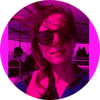

|  |
Cláudia Lomba
Cultural Communication and Production
Throughout my professional experience, communications and production have been my main passions.
Communications management, content writing, press relations, film and television production are areas in which I really enjoy working in. After more than 10 years of working experience, I felt I needed to study new concepts and ideas to renew my daily inspiration at work. In the last two years, I’ve dedicated myself fully to the Master’s in Studies and Management of Culture (ISCTE) and to Alvalade Cineclube, a non-profit cultural association that promotes weekly film sessions and other events related to the democratization and fruition of the cinematographic experience.
|